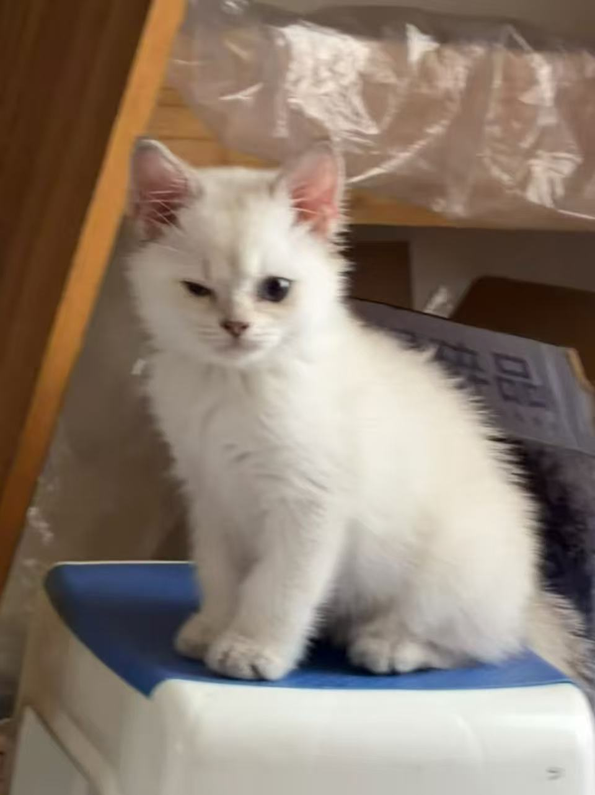
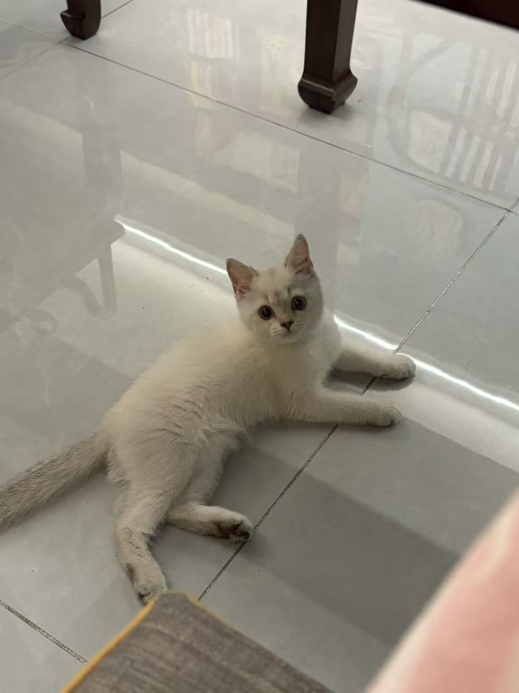
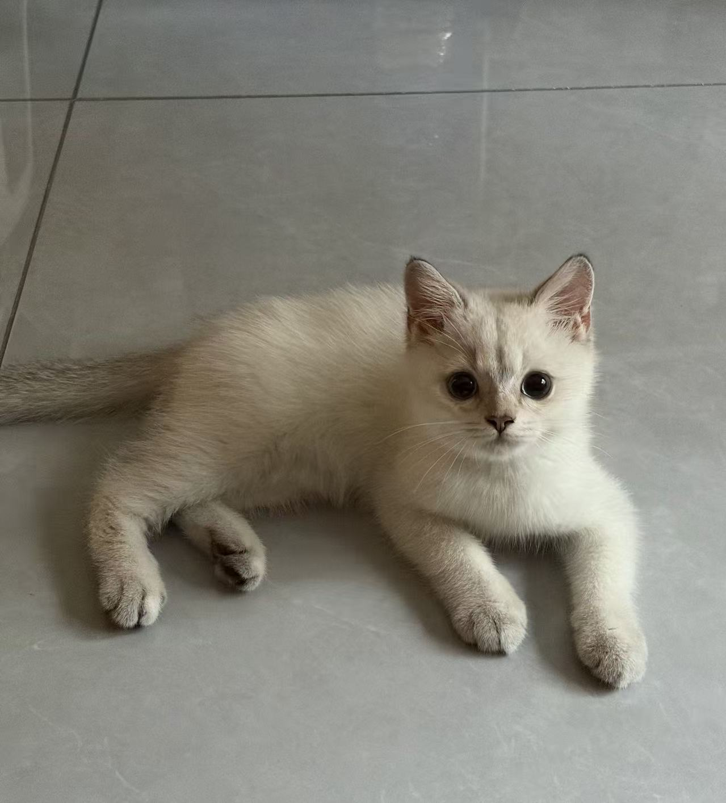

我的小猫咪，一只白白软软、眼神会说话的毛孩子。 它是我生活里最温柔的存在。
大家好，我是兜兜！一只白白的、软软的小猫咪。我的眼睛又大又圆，据说看人的时候像在说话。
我最喜欢的事情是趴在地板上晒太阳、偷看主人做事、还有在饭点准时出现。别看我小小一只，我的心里可装着整个家呢～

每一个瞬间都值得被记录 📸


天刚亮就在屋里溜达一圈，检查一切是否如常，顺便提醒人类该起床了
找到地板上最暖的那一块光斑，趴好，闭眼，进入充电模式
到了饭点会准时出现在饭碗旁，用眼神催促，比闹钟还准
主人做什么都要在旁边看着，尤其是用电脑的时候，键盘是最佳观测点
睡前一定要凑过来蹭蹭，找一个舒服的位置，陪人类一起入睡
每一只小动物都是上天派来教我们
什么是无条件爱的使者。